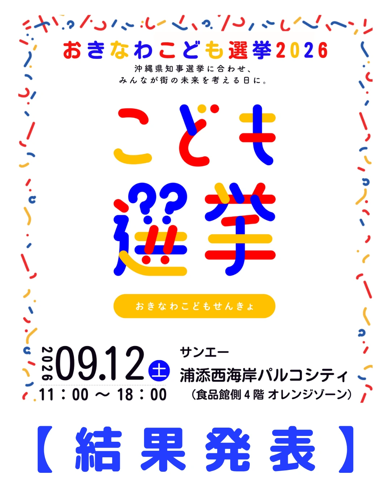
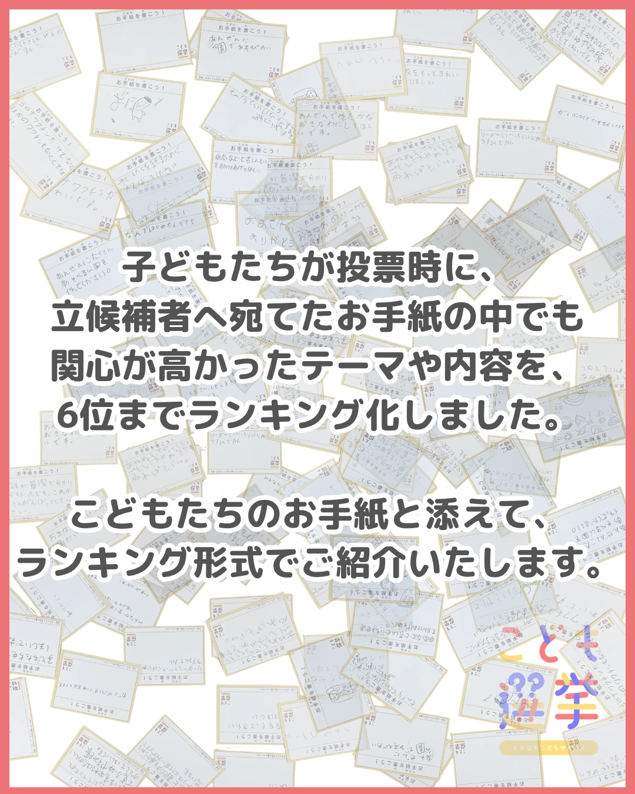
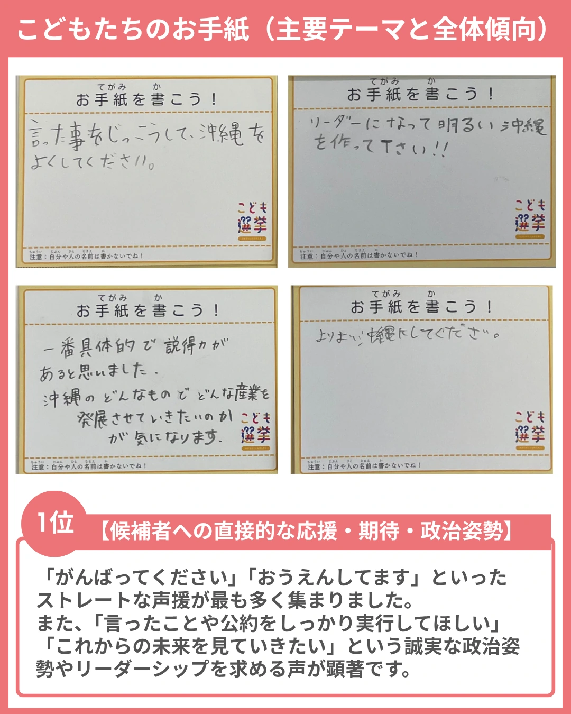
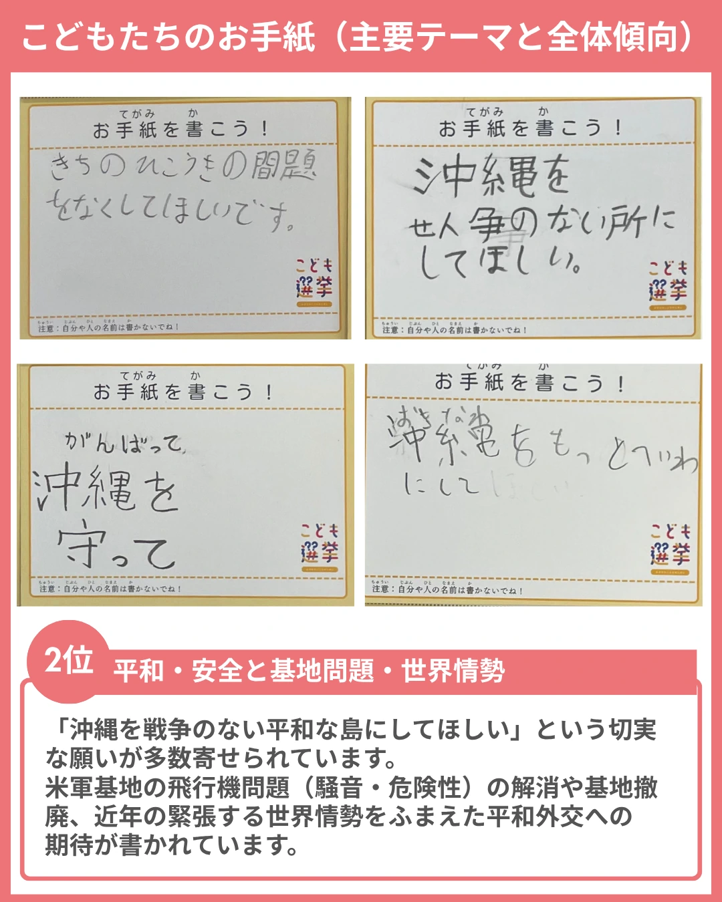
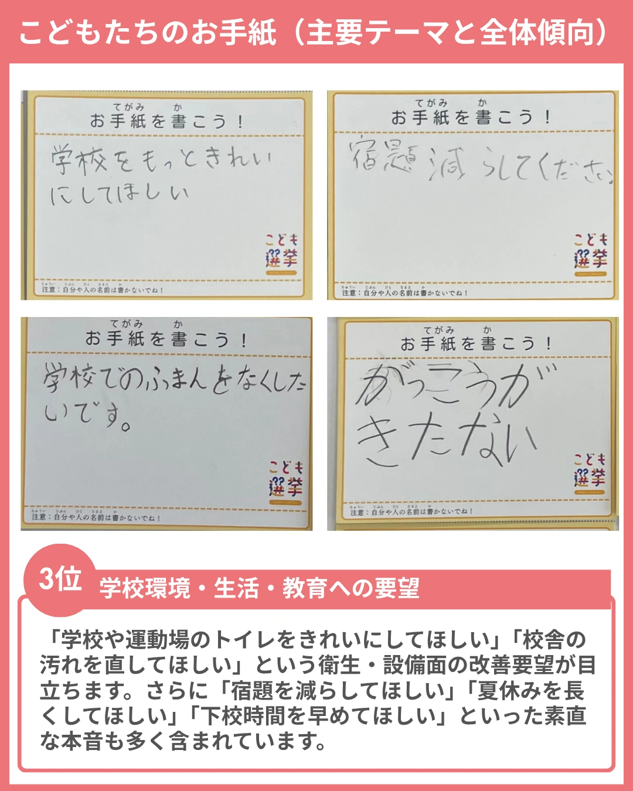
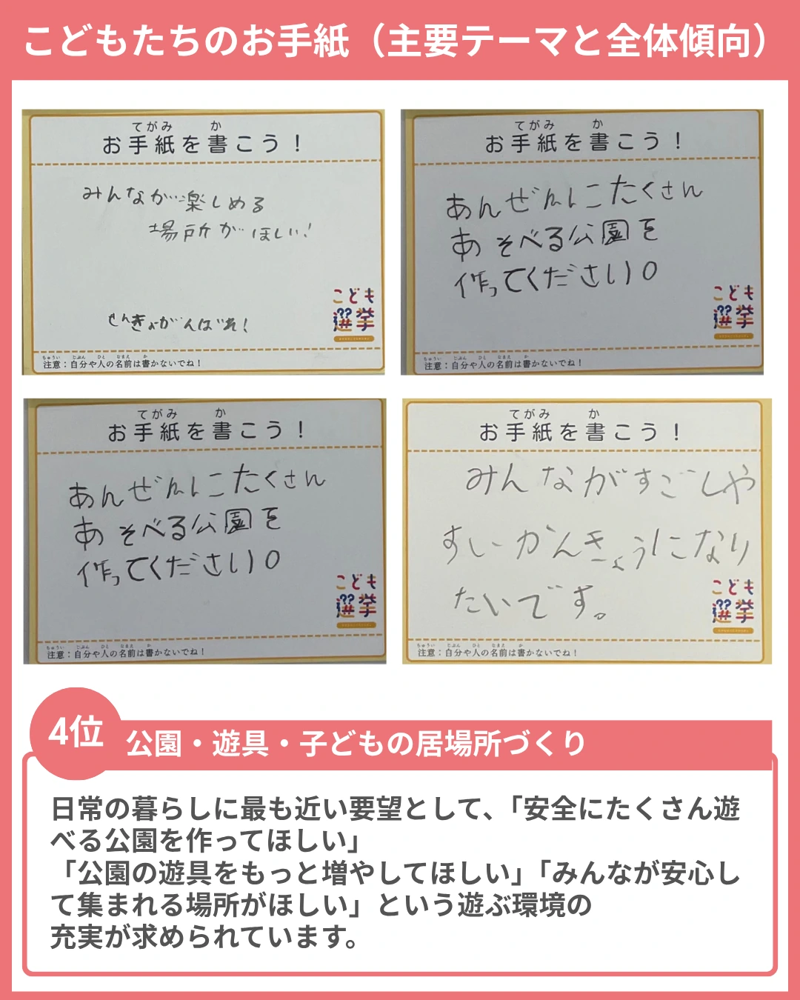
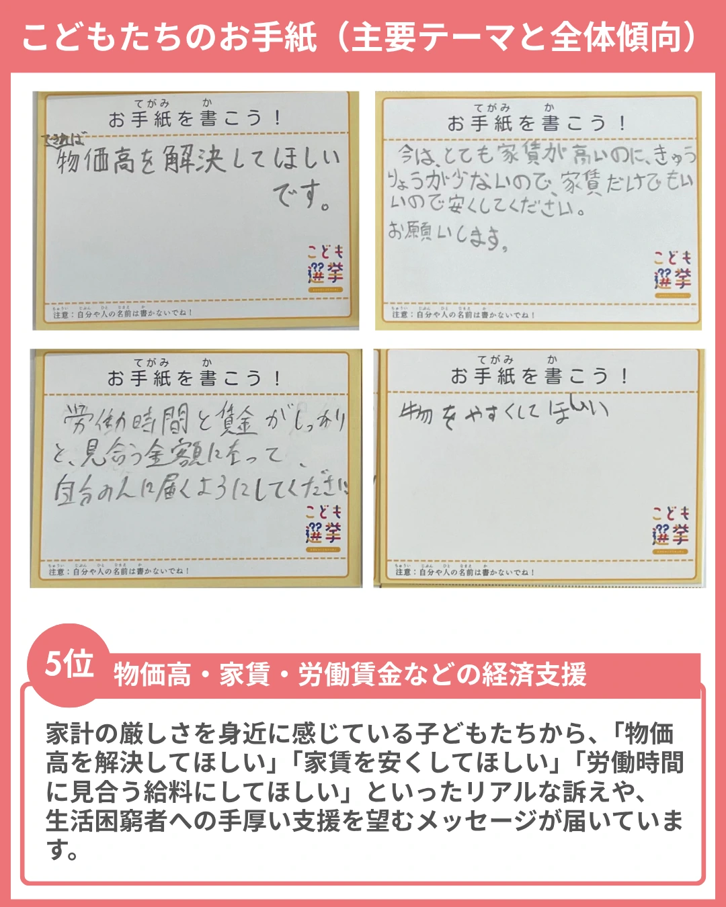
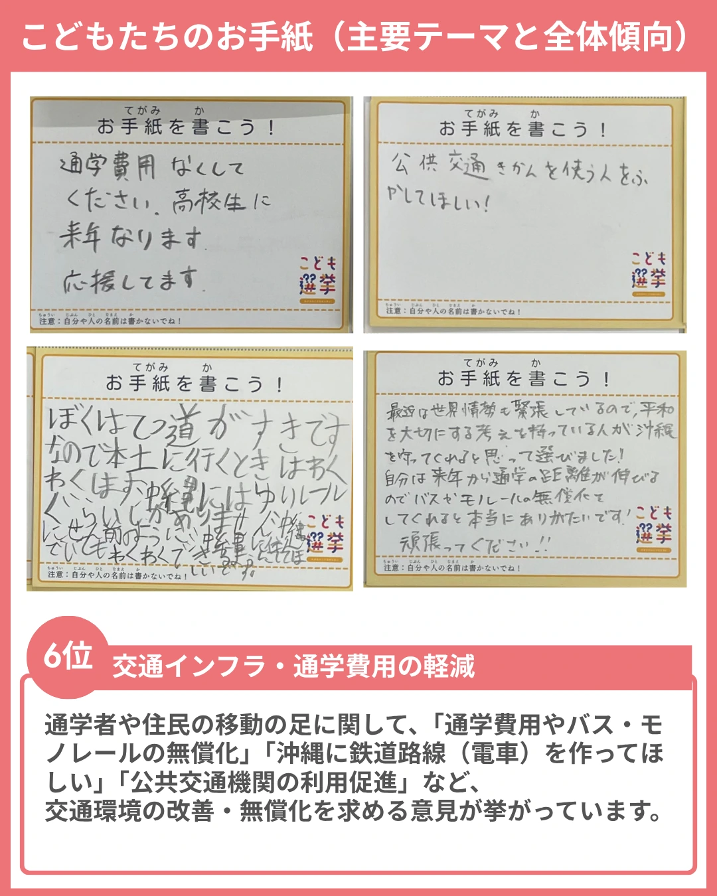
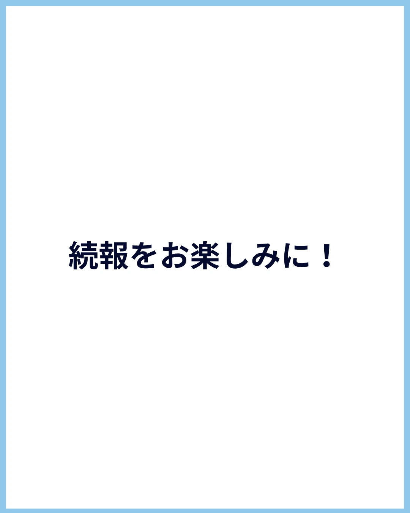

おきなわこども選挙2026
結果発表

大変お待たせいたしました！
2026年9月12日（土）にサンエー浦添西海岸パルコシティで開催した「おきなわこども選挙2026」の開票結果をご報告いたします。
沖縄県内初となった今回の取り組みに、たくさんの子どもたちや保護者の皆様にご参加いただき、誠にありがとうございました。
選挙権を持たない子どもたちが、候補者の言葉に耳を傾け、沖縄の未来を自分ごととして真剣に考え、一票を投じてくれました。
総合結果
各候補者の得票数・お手紙数（届出順）
| 候補者名 | 得票数 | お手紙数 |
|---|---|---|
| 古謝 玄太 | 61票 | 60通 |
| 兼島 俊 | 19票 | 19通 |
| 末吉 正弘 | 7票 | 8通 |
| 玉城 デニー | 59票 | 58通 |
| 比嘉 隆 | 13票 | 13通 |
| 屋良 朝助 | 7票 | 5通 |
| 無効票・無効お手紙 | 2票 | 4通 |
| 合計 | 168票 | 167通 |
※総投票数・お手紙総数には、無効票・無効お手紙を含みます。
子どもたちが託したメッセージ・関心テーマ
投票用紙と一緒に寄せられた167通の大切なお手紙。子どもたちが今どんなことに関心を持ち、どんな未来を望んでいるのか、関心の高かったテーマを6位までご紹介します。

1位 候補者への直接的な応援・期待・政治姿勢

2位 平和・安全と基地問題・世界情勢

3位 学校環境・生活・教育への要望

4位 公園・遊具・子どもの居場所づくり

5位 物価高・家賃・労働賃金などの経済支援

6位 交通インフラ・通学費用の軽減

そのほかのお手紙・絵に込めた願い
直筆のメッセージの一部もご紹介します。文字を書くのがまだ難しい小さなお子さんたちも、大好きな沖縄や未来への願いを絵に込めて伝えてくれました。
お手紙のお届けについて
子どもたちが託してくれた大切なお手紙は、実行委員会が責任を持って各立候補者のもとへ直接お届けしております。すべての候補者へのお届けが完了しましたら、改めてその様子をご報告いたします。
子どもたちのまっすぐな声が社会へ届き、これからの沖縄の未来につながっていくよう、引き続き活動を続けてまいります。今後のレポートや続報もお楽しみに！
